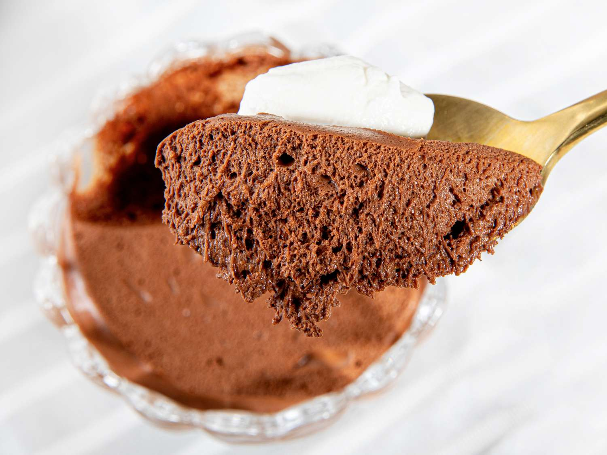

Two-Ingredient Chocolate Mousse

Contains: Eggs, Chocolate
Learn how to make a wonderful 2 ingredient chocolate mousse!
Ingredients:
- 6 eggs
- 200 grams of baker's chocolate
Steps:
- Seperate egg whites and yolks
- Melt chocolate over bain-marie
- Whip egg whites to stiff peaks
- Remove melted chocolate from heat
- Slowly incorporate egg yolks and stir with force
- Optional: add a small amount of butter, whipping cream, or milk to melting chocolate if consistency is too thick
- Take about a quarter of egg whites and mix into chocolate mixture
- Take egg white and chocolate mixture and slowly incorporate it into whipped egg whites
- Gently fold entire chocolate mixture into egg whites until color is a uniform brown
- Transfer into desired dish/containers and let set in the fridge for at least 4 hours